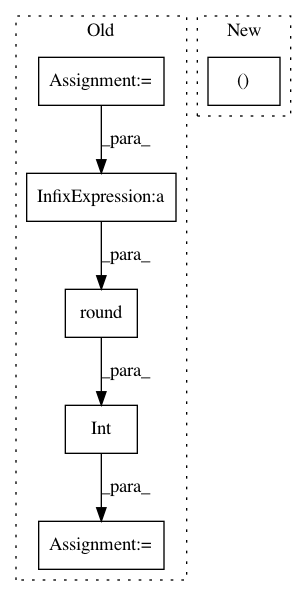

219b3f98001448eff5f2cbb5467940b6a2bfb4fe,data/aligned_dataset.py,AlignedDataset,__getitem__,#AlignedDataset#Any#,19
Before Change
w_total = AB.size(2)
w = int(w_total / 2)
h = AB.size(1)
if self.center_crop:
w_offset = int(round((w - self.opt.fineSize) / 2.0))
h_offset = int(round((h - self.opt.fineSize) / 2.0))
else:
w_offset = random.randint(0, max(0, w - self.opt.fineSize - 1))
h_offset = random.randint(0, max(0, h - self.opt.fineSize - 1))
After Change
w, h = AB.size
w2 = int(w / 2)
A = AB.crop((0, 0, w2, h)).resize((self.opt.loadSize, self.opt.loadSize), Image.BICUBIC)
B = AB.crop((w2, 0, w, h)).resize((self.opt.loadSize, self.opt.loadSize), Image.BICUBIC)
A = transforms.ToTensor()(A)
B = transforms.ToTensor()(B)
w_offset = random.randint(0, max(0, self.opt.loadSize - self.opt.fineSize - 1))
In pattern: SUPERPATTERN
Frequency: 4
Non-data size: 6
Instances
Project Name: junyanz/BicycleGAN
Commit Name: 219b3f98001448eff5f2cbb5467940b6a2bfb4fe
Time: 2018-09-03
Author: junyanzhu89@gmail.com
File Name: data/aligned_dataset.py
Class Name: AlignedDataset
Method Name: __getitem__
Project Name: SpiNNakerManchester/sPyNNaker
Commit Name: 99fb650dee4598e3bd61da14b6e03f940f34e018
Time: 2018-01-16
Author: donal.k.fellows@manchester.ac.uk
File Name: spynnaker/pyNN/connections/spynnaker_poisson_control_connection.py
Class Name: SpynnakerPoissonControlConnection
Method Name: set_rates
Project Name: oarriaga/face_classification
Commit Name: e90157e7f01c85e9ef22f9679f1a40bda0efb51f
Time: 2017-06-30
Author: arriaga.camargo@gmail.com
File Name: src/utils/utils.py
Class Name:
Method Name: split_data
Project Name: etal/cnvkit
Commit Name: 29db4abdbeb839340ac5b0caf934ebda93892934
Time: 2017-02-24
Author: eric.talevich@gmail.com
File Name: cnvlib/batch.py
Class Name:
Method Name: batch_make_reference